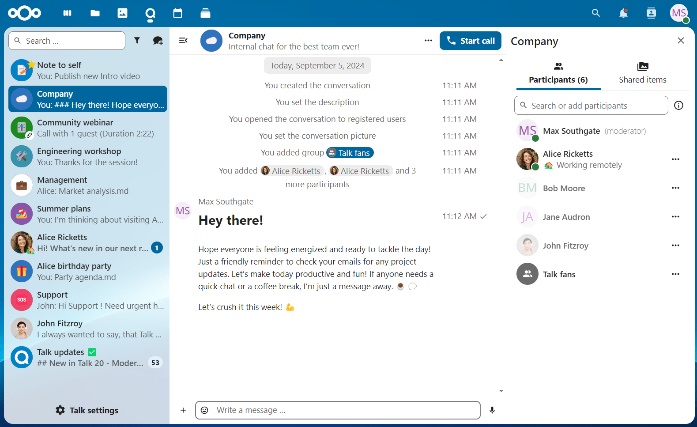
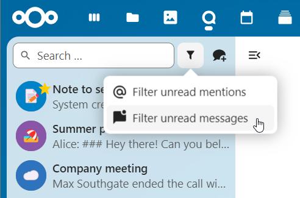
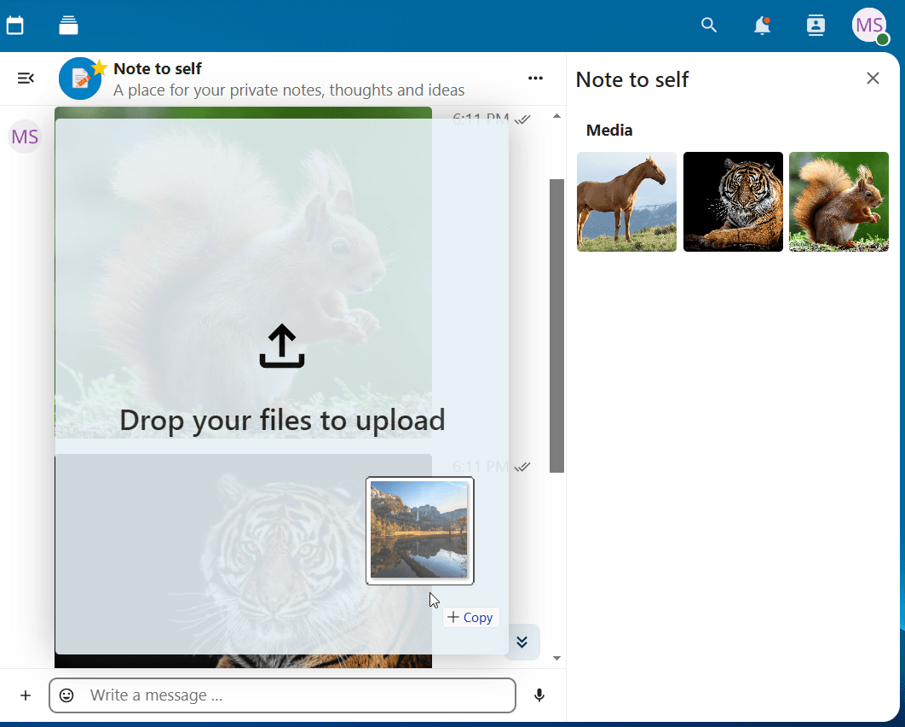
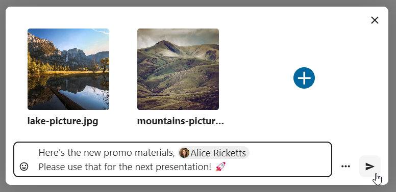
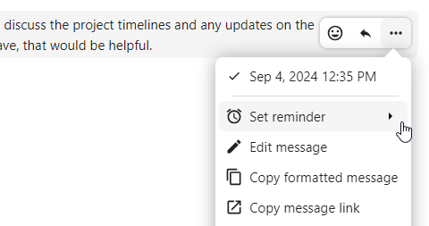
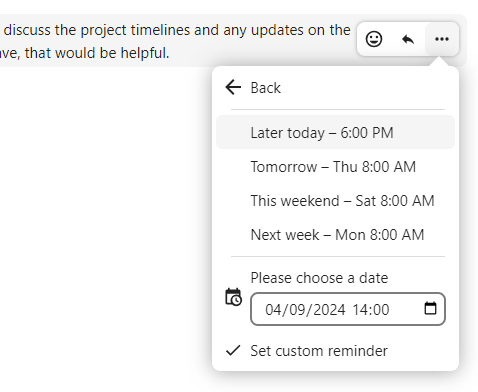
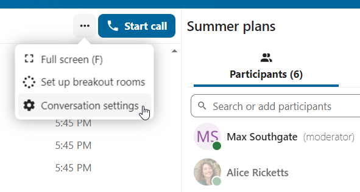
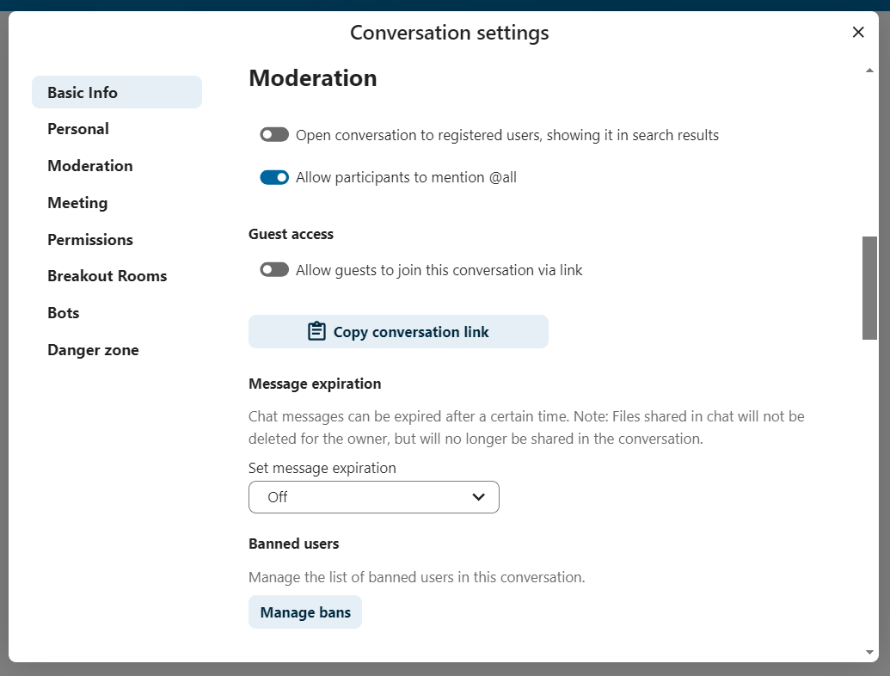

Grunnleggende om Nextcloud Talk
Nextcloud Talk lar deg chatte og ha videosamtaler på din egen server.
Chatter og anrop foregår i samtaler. Du kan opprette et hvilket som helst antall samtaler. Det finnes to typer samtaler:
En-til-en-samtaler. Det er her du har en privat chat eller samtale med en annen Talk-bruker. Du kan ikke legge til andre personer i denne samtalen eller dele den med en kobling. Du starter en direkte en-til-en-chat ved å se etter en annen bruker i søkefeltet og deretter klikke på navnet deres.
Gruppesamtaler. I tillegg til personen som opprettet samtalen, kan en gruppesamtale ha et ubegrenset antall personer. En gruppesamtale kan deles offentlig med en kobling, slik at eksterne gjestebrukere kan bli med i en samtale. Det kan også listes, slik at andre personer på Nextcloud-serveren din kan bli med i samtalen.
Opprettelse av chat
You can create a direct, one-on-one chat by searching for the name of a user, a group or a team and clicking it. For a single user, a conversation is immediately created and you can start your chat. For a group or circle you get to pick a name and settings before you create the conversation and add the participants.

If you want to create a custom group conversation, click the button next to the search field and filters button and then on Create a new conversation.

Du kan deretter velge et navn for samtalen, legge inn en beskrivelse og sette opp en avatar for den (med opplastet bilde eller emoji), og velge om samtalen skal være åpen for eksterne brukere, og om andre brukere på serveren kan se og bli med i samtalen.

I det andre trinnet får du legge til deltakere og fullføre opprettelsen av samtalen.

After confirmation you will be redirected to the new conversation and can start communicating right away.
{kind=link}
Vis alle åpne samtaler
You can view all the conversations that you can join by clicking the button next to the search field and filters button and then on Join open conversations.
{kind=link}
Filtrer samtalene dine
Du kan filtrere samtalene dine ved hjelp av filterknappen ved siden av søkefeltet. Det er to alternativer for filtrering: 1. Filtrer uleste omtaler: Dette alternativet lar deg se gruppesamtaler med uleste omtaler eller uleste en-til-en-samtaler. 2. Filtrer uleste meldinger: Dette alternativet lar deg se alle uleste meldinger i alle sammenføyde samtaler.
{kind=link}
Du kan deretter fjerne filteret fra filtermenyen.

Deling av filer i en chat
Du kan dele filer i en chat på 3 måter.
Først kan du ganske enkelt dra og slippe dem på chatten.
{kind=link}
For det andre kan du velge en fil fra Nextcloud Filer eller en filbehandling ved å velge den lille bindersen og velge hvor du vil velge filen fra.


You can add more files until you are done and decide to share the files. You can also add a text caption to your shared files, providing a brief description or context.
{kind=link}
Alle brukere vil kunne klikke på filene for å se, redigere eller laste dem ned, uavhengig av at de har en brukerkonto. Brukere med en konto vil få filen automatisk delt med dem, mens eksterne gjestebrukere vil få dem delt som en offentlig kobling.

Sette inn emoji
Du kan legge til emoji ved å bruke velgeren til venstre for tekstinntastingsfeltet.

Editing messages
You can edit messages and captions to file shares up to 6 hours after sending.

Using Markdown
You can enhance your messages with a markdown syntax support. See list for usage:
Headings and dividers
# Heading 1
## Heading 2
### Heading 3
#### Heading 4
##### Heading 5
###### Heading 6
Heading
===
Normal text
***
Normal text
Inline decorations
**bold text** __bold text__
*italicized text* _italicized text_
`inline code` ``inline code``
```
.code-block {
display: pre;
}
```
Lists
1. Ordered list
2. Ordered list
* Unordered list
- Unordered list
+ Unordered list
Quotes
> blockquote
second line of blockquote
Task lists
- [ ] task to be done
- [x] completed task
Tables
Column A | Column B
-- | --
Data A | Data B
Setting reminder on messages
You can set reminders on specific messages. If there’s an important message you want to be notified about later, simply hover over it and click on the reminder icon.
{kind=link}
In the submenu, you can select an appropriate time to receive a notification later.
{kind=link}
Svare på meldinger og mer
Du kan svare på en melding ved hjelp av pilen som vises når du holder pekeren over en melding.

I menyen ’’…’’ kan du også velge å svare privat. Dette vil åpne en en-til-en-chat.

Her kan du også opprette en direktelenke til meldingen eller merke den som ulest, slik at du blar tilbake dit neste gang du går inn i chatten. Når det er en fil, kan du vise filen i Filer.
Silent messages
If you don’t want to disturb anyone in the middle of the night, there is a silent mode for chatting. While it is enabled, other participants will not receive notifications from your messages.

Administrere en samtale
Du er alltid moderator i den nye samtalen. I deltakerlisten kan du forfremme andre deltakere til moderatorer ved å bruke ’’…’-menyen til høyre for brukernavnet, tildele dem egendefinerte tillatelser eller fjerne dem fra samtalen.
Hvis du endrer tillatelsene til en bruker som ble med i en offentlig samtale, legges de også permanent til i samtalen.

Moderatorer kan konfigurere samtalen. Velg ’’Samtaleinnstillinger’’ fra ’’…’’-menyen i samtalen øverst for å få tilgang til innstillingene.
{kind=link}
Her kan du konfigurere beskrivelsen, gjestetilgang, hvis samtalen er synlig for andre på serveren og mer.
{kind=link}
Messages expiration
A moderator can configure message expiration under the Conversation settings within the Moderation section. Once a message reaches its expiration time, it is automatically removed from the conversation.
The available expiration durations are 1 hour, 8 hours, 1 day, 1 week, 4 weeks, or never (which is the default setting).
{kind=link}
Starte en samtale
Når du er i en samtale, kan du starte en samtale når som helst med «Start samtale»-knappen. Andre deltakere vil bli varslet og kan bli med i samtalen.

Hvis noen andre allerede har startet en samtale, endres knappen til en grønn ’’Bli med i samtale’’-knapp.

Under en samtale kan du dempe mikrofonen og deaktivere videoen din med knappene øverst til høyre, eller bruke snarveiene ’’M’’ for å dempe lyd og ’’V’’ for å deaktivere video. Du kan også bruke mellomromstasten for å veksle demp av og på. Når du er dempet, vil det å trykke på mellomrom oppheve dempingen av deg, slik at du kan snakke til du slipper mellomromstasten. Hvis du ikke slår på lyden, vil å trykke mellomrom dempe deg til du slipper.
Du kan skjule videoen din (nyttig under en skjermdeling) med den lille pilen rett over videostrømmen. Ta den tilbake med den lille pilen igjen.
Du kan få tilgang til innstillingene dine og velge et annet webkamera, mikrofon og andre innstillinger i menyen ’’…’’ i topplinjen.

From media settings dialog, you can also change the background of your video.

Du kan endre andre innstillinger i dialogboksen ’’Talk-innstillinger’.

{kind=link}
Endre visning i en samtale
Du kan bytte visning i en samtale med det lille ikonet med fire blokker øverst til høyre mellom forfremmet visning og rutenettvisning. Rutenettvisningen viser alle like store, og hvis personene ikke passer på skjermen, vises knapper til venstre og høyre som lar deg navigere.

Den promoterte visningen viser høyttaleren stor og andre på rad nedenfor. Hvis personene ikke passer på skjermen, vises knapper til venstre og høyre som lar deg navigere.